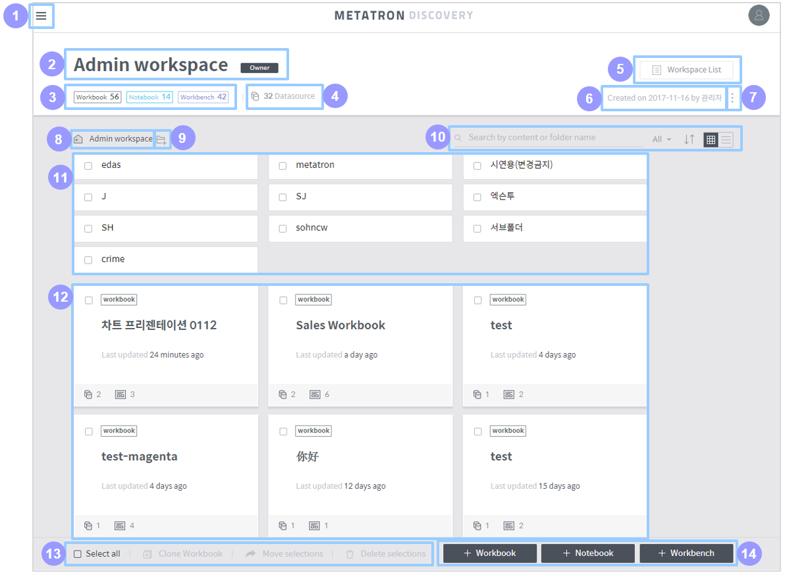
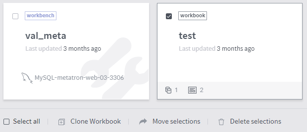

Workspace home¶
On the workspace home page, you can perform manage the Metatron Discovery entities (workbooks, notebooks and workbenches) contained in the workspace.
Composition of the workspace home¶
The overall composition of the workspace home is as follows:

Main menu button: Click this button to open a panel to access another workspace.
Workspace information: Displays the name and description of the workspace. If the logged-in user owns the workspace, an Owner icon will be displayed next to the name of the workspace.
Registered entities: Displays the number of entities registered in the workspace by entity type.
Data source: Displays the number of data sources used in the workspace. Click this area to show a list of these data sources.
Workspace list: Click this button to show a list of shared workspaces. (See Shared workspace list for how to handle it.)
Creation information: Displays who and when created the workspace.
More: Edit the settings of the workspace.
Edit the name and description: Edits the name and description of the workspace.
Set shared member & group: Sets the users and groups who can access the workspace. (See Set access permissions for a shared workspace for details.)
Set notebook server: Sets access information for external analytics tool servers used by the Notebook module.
Set permission schema: Sets the access permission of each user role for the workspace. (See Set access permissions for a shared workspace for details.)
Change owner: Changes the owner of the workspace.
Delete workspace: Deletes the workspace.
Path in the workspace: Displays the current location in the workspace. Click on a parent folder listed in the path to move to that folder.
Create a folder: Click on it to create a new folder in the current location.
Filter/sort the entity list:
Search: Searches for an entity or folder in the workspace by name.
Entity type: Displays only your selected type of entities among workbooks, notebooks, and workbenches.
Sort: Sorts folders and entities by their name or when they were last updated.
View type: Select either the grid view or list view as the format of how the entities are listed in the workspace.
Folder list: Displays folders that meet search criteria in the current location. Click one to enter that folder. (For details on individual folders, see Folder items)
Entity list: Displays entities that meet search or sorting criteria in the current location. Click an entity to enter its home. (For details on individual entities, see Entity items)
Select/clone/move/delete entity: Select all entities, or clone, move or delete an entity. (See Select/clone/move/delete folder and entity for details.)
Create an entity: Buttons used to create a specific type of entity in the workspace. (For details, see Create a workbook, Create a notebook, and Create a workbench, respectively.)
Folder items¶
When the mouse cursor is over a folder, it is shown as follows:

Check box: Used to select the folder. You can clone, move or delete the selected folder.
Name: Name of the folder.
Edit: Click on it to modify the name of the folder. This button is displayed only when you hover the mouse over the folder item.
Delete: Click on it to delete the folder. This button is displayed only when you hover the mouse over the folder item.
Entity items¶
When the mouse cursor is over an entity, it is shown as follows:

Check box: Used to select the entity. You can clone, move or delete the selected entity.
Entity type: Displays the type of the entity (workbook/notebook/workbench).
Delete: Click on it to delete the entity. This button is displayed only when you hover the mouse over the entity item.
Name: Name of the entity.
Last updated: Displays when the entity was last updated.
Number of data sources/dashboards: This is an exclusive area for the workbook type.
The number next to the icon refers to how many data sources are connected to the workbook.
The number next to the
icon refers to how many dashboards are registered in the workbook.
Select/clone/move/delete folder and entity¶
You can clone, move or delete folders and entities in the workspace. Once you select a folder or entity, the clone, move, and delete buttons in the lower-left corner of the workspace home become active.

Select all: Selects all items in the current folder and entity list.
Clone workbook: This is exclusive for the workbook type. Click this button to clone the selected workbooks.
Move selections: Moves the selected folders and entities. Workbooks can be moved to another workspace, and other types of items can be moved to another folder in the same workspace. However, it is impossible to move selections when workbooks and other types of entities are selected together.
Delete: Deletes the selected folders and entities.